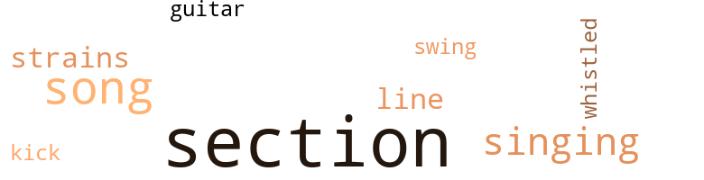
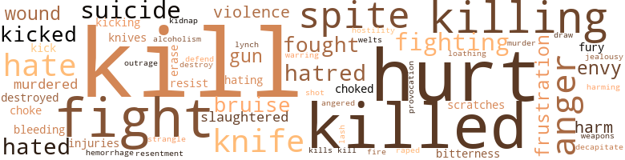

Mind of My Mind, by Butler, Octavia (1977)
35 music-related terms matched in this text.
Most frequent terms in this topic: section (17); song (6); singing (4); strains (2); line (2)
guitar.n.01
Definition: a stringed instrument usually having six strings; played by strumming or plucking
| word | sentence |
|---|---|
| guitar | I found him sitting on an old sofa in the garage , fooling around with a guitar . |
kick.v.04
Definition: kick a leg up
| word | sentence |
|---|---|
| kick | Otherwise Clay might get mean enough to kick her out over nothing . |
section.n.01
Definition: a self-contained part of a larger composition (written or musical)
| word | sentence |
|---|---|
| section | The Patternist section of Forsyth is as big as a small town already . |
| section | All those people , those fifteen hundred people in the section , are hers , not yours . " |
| section | " They 've completely taken over the best section of town . |
| section | " You want the section to grow now by births only ? " |
| section | I keep away from the section as much as I can . |
| section | For over a year now , seconds had used her learning blocks to give their charges quick , complete knowledge of the section 's rules and regulations . |
| section | Other learning blocks offered them choices , showed them the opportunities available to them for making their own place within the section . |
| section | Jan had moved the Dietrichs and several other teachers into the section , where they could do both jobs . |
| section | He , and a few others like him scattered around the section , were being used to calculate just how much information ordinary mutes needed to come to understand their situation . |
| section | Children who lived in the section , surrounded by Patternists and thus by the Pattern , did not need direct contact with Mary to push them into transition . |
| section | Karl made some comparison between our position in the section and the position of the President 's family in the nation . |
| section | Jesse is working right now to prepare a new section of Santa Elena for us . |
| section | " I do n't know how she 'll handle things when the time comes , but I have a feeling she 'll want to get as many of the people away from the section as she can . |
| section | Every Patternist in the section . |
| section | " First I 'm going to clear the section . " |
| section | So you are all to get up tonight , now , and leave the section . |
| section | Now the strongest people in the section , the most responsible people , had been charged with seeing that my commands were obeyed . |
singing.n.01
Definition: the act of singing vocal music
| word | sentence |
|---|---|
| singing | The congregation was singing when she walked into the auditorium . |
| singing | Watery , pallid , uninspired singing . |
| singing | She could have moved them with her singing even if she had nothing else . |
| singing | But she had a great deal more to offer than singing . |
song.n.01
Definition: a short musical composition with words
| word | sentence |
|---|---|
| song | The cry went up in the middle of the song , and the song would have died away had she not joined in and kept it going . |
| song | The cry went up in the middle of the song , and the song would have died away had she not joined in and kept it going . |
| song | Eli started to step away from the pulpit as the song ended . |
| song | From that first song , they were hers . |
| song | I had been hearing slightly different versions of that same song from everybody for two days . |
| song | I glanced at the television for a moment , listened as some woman tortured a song . |
swing.n.05
Definition: a style of jazz played by big bands popular in the 1930s; flowing rhythms but less complex than later styles of jazz
| word | sentence |
|---|---|
| swing | Resented it enough to take the first swing . |
tune.n.01
Definition: a succession of notes forming a distinctive sequence
| word | sentence |
|---|---|
| line | He understood it well enough to use it to keep his people in line . |
| strains | He now had several strong mutant strains , which he combined or kept separate , as he wished . |
| line | Both those factors will help keep her in line . |
| strains | It left him with none of the usual bruises and strains , because Mary did not try to restrain him with her own body or tie him down . |
whistle.v.01
Definition: make whistling sounds
| word | sentence |
|---|---|
| whistled | I whistled . |
402 violence-related terms matched in this text.
Most frequent terms in this topic: kill (88); hurt (45); killed (33); fight (26); killing (25)
abhorrence.n.01
Definition: hate coupled with disgust
| word | sentence |
|---|---|
| loathing | " My parents , " said Page with quiet loathing . |
abrasion.n.01
Definition: an abraded area where the skin is torn or worn off
| word | sentence |
|---|---|
| scratches | I could see a set of deep , ugly scratches down the left side of his face , and I knew I had put them there . |
| scratches | " We 're going to have to be more careful when we do that again , " he said , examining some of his scratches . |
aggravation.n.02
Definition: unfriendly behavior that causes anger or resentment
| word | sentence |
|---|---|
| provocation | But she 's been known to use violence on far less provocation . " |
alcoholism.n.01
Definition: habitual intoxication; prolonged and excessive intake of alcoholic drinks leading to a breakdown in health and an addiction to alcohol such that abrupt deprivation leads to severe withdrawal symptoms
| word | sentence |
|---|---|
| alcoholism | The totally deaf child gained hearing , but the one-armed man - he had come to get help in his fight against alcoholism - did not grow a new arm . |
anger.n.01
Definition: a strong emotion; a feeling that is oriented toward some real or supposed grievance
| word | sentence |
|---|---|
| anger | There was no anger or resentment in her , he could see . |
| anger | Desperation , anger , fear , hatred . . . . |
| anger | The girl was angry now , and the man was the only one she could take her anger out on safely . |
| anger | As the two men fought , though , it was Tom whose anger grew , silently encouraged by Jesse . |
| anger | He started grog-gily to get up , and the man whose anger he had mentally encouraged kicked him in the face . |
| anger | Tired of her own pointless anger . |
| anger | His silence and his obvious anger . |
| anger | She looked at him first , vacillating between fear and anger ; then she looked away . |
| anger | Then the anger faded as though she did n't have the energy to sustain it . |
| anger | Let him get over some of his anger with you and see the sense in what you 're saying . |
| anger | Her thought was full of bitterness and anger and grief . |
| anger | Surprise and anger were the first emotions Doro tasted in the man 's mind . |
| anger | Surprise , anger , then fear . |
| anger | I needed to burn off some of my anger before I got home , anyway . |
| anger | I was in contact with a Patternist in Chicago who was crying in anger and frustration at my " stupid , arbitrary , dictatorial orders . . . On and on . |
| anger | In an instant of uncontrolled anger , he could have killed them all . |
anger.v.02
Definition: become angry
| word | sentence |
|---|---|
| angered | Everything she did either angered or humiliated him . |
bleeding.n.01
Definition: the flow of blood from a ruptured blood vessel
| word | sentence |
|---|---|
| hemorrhage | " Now I know - I just found out - that Rachel can give me a heart attack or a cerebral hemorrhage or any other deadly thing she wants to . |
| bleeding | I left him lying on the floor bleeding and went up to Rachel 's room . |
| bleeding | I stopped the bleeding . |
bruise.n.01
Definition: an injury that doesn't break the skin but results in some discoloration
| word | sentence |
|---|---|
| bruise | Then I realized that even if he had n't seen Doro 's hand , I had a big bruise on my jaw . |
| bruise | I peered into the mirror at my bruise . |
| bruises | He uncovered the child , saw that she was sleeping nude , saw the bruises and welts on her back and legs . |
| bruises | It left him with none of the usual bruises and strains , because Mary did not try to restrain him with her own body or tie him down . |
| bruises | I wound up with bruises and he had nail marks and bites . |
butcher.v.01
Definition: kill (animals) usually for food consumption
| word | sentence |
|---|---|
| slaughtered | And behind him he had an untold number of failures , dangerous or only pathetic , which he had destroyed as casually as other people slaughtered cattle . |
| slaughtered | She wondered how many boy children he had slaughtered as a result of his trouble . |
| slaughtered | And getting themselves slaughtered . |
decapitate.v.01
Definition: cut the head of
| word | sentence |
|---|---|
| decapitate | Then he would simply cut her throat - decapitate her if necessary . |
destroy.v.04
Definition: put (an animal) to death
| word | sentence |
|---|---|
| destroyed | And behind him he had an untold number of failures , dangerous or only pathetic , which he had destroyed as casually as other people slaughtered cattle . |
| destroyed | It may he destroyed . |
| destroy | But , ironically , her very completeness would help to destroy her . |
draw.v.23
Definition: pull (a person) apart with four horses tied to his extremities, so as to execute him
| word | sentence |
|---|---|
| draw | She had nothing left , no time to draw strength from more of her people . |
envy.n.01
Definition: a feeling of grudging admiration and desire to have something that is possessed by another
| word | sentence |
|---|---|
| envy | She would be the envy of the female population of Donaldton and she knew it . |
| envy | He watched them with carefully concealed emotions of suspicion and envy . |
| envy | I suspected it was more envy than hatred . |
| Envy | Envy was bad enough . |
erase.v.01
Definition: remove from memory or existence
| word | sentence |
|---|---|
| erase | How many of his problems would her death erase ? |
| erase | Seth had n't bothered to erase her from the memories of the people she knew in New York . |
fight.n.02
Definition: the act of fighting; any contest or struggle
| word | sentence |
|---|---|
| fighting | " I do n't want fighting . |
fight.n.05
Definition: a boxing or wrestling match
| word | sentence |
|---|---|
| fight | The totally deaf child gained hearing , but the one-armed man - he had come to get help in his fight against alcoholism - did not grow a new arm . |
| fight | Only people from outside Donaldton who did n't know the odds against Tom came to watch a fight . |
| fights | " I would n't pick any fights with him if I were you . |
| fight | I would have put up more of a fight if I had known how to fight Doro . |
| fight | " When 's the last time you were in a fight ? " |
| fight | " A fight ? |
| fight | A fist fight ? " |
fight.v.02
Definition: fight against or resist strongly
| word | sentence |
|---|---|
| fight | " Why did you and Doro fight ? " |
| fought | " You know damn well why we fought . " |
| fight | He caressed her , wondering idly how she could want life badly enough to fight as hard as she had to fight to keep it . |
| fight | He caressed her , wondering idly how she could want life badly enough to fight as hard as she had to fight to keep it . |
| fight | You do n't want to have to fight with that thing every time you want to eat , do you ? " |
| fight | She shut herself in an empty Sunday-school classroom to be alone to fight the thing that was happening to her . |
| fight | " Man , you sure want to fight bad . |
| fought | As the two men fought , though , it was Tom whose anger grew , silently encouraged by Jesse . |
| fight | Jesse mentally goaded Tom to fight as though his life were at stake . |
| fighting | It kept him on his feet when he should have fallen , kept him fighting , well after he was beaten . |
| fought | Then came the forced mind-to-mind contact that she fought savagely and uselessly . |
| fight | He was the last to arrive , because lie wasted two days trying to fight the pattern . |
| fight | Their fear made them fight harder than ever against me . |
| fight | This was n't the time to fight with him . |
| defend | But I was n't nervous or afraid , because I knew I could defend myself if I had to , and I knew none of them meant to try anything - yet . |
| fighting | That was something else I had told him - how they were fighting not only me but their own inclinations . |
| fought | She fought me briefly . |
| fighting | I 'm not fighting it any more , for the same reason Jesse and Rachel probably wo n't fight me any more . |
| fight | I 'm not fighting it any more , for the same reason Jesse and Rachel probably wo n't fight me any more . |
| fighting | I 'm not fighting you , but you should n't expect me to thank you , either . " |
| fighting | I did n't pay any attention to what they were fighting about . |
| fighting | He would regain control of his life and be able to use his energy for something besides fighting to stay sane . |
| fight | If I have to fight him , it will be a battle , not a rout . " |
| fight | " You 're going to have to fight . " |
| fight | I 'm going to have to fight him . |
| fight | I told them what kind of trouble you were in , told them that you were going to fight . |
| fight | You 'll have to help me fight . |
| fought | Doro fought desperately , uselessly . |
| fight | I would have put up more of a fight if I had known how to fight Doro . |
| fight | I never much wanted to fight him before . |
| fight | How could you fight that ? |
| fight | Does she fight ? " |
frustration.n.03
Definition: a feeling of annoyance at being hindered or criticized
| word | sentence |
|---|---|
| frustration | Lea became an outlet for Jan 's frustration . |
| frustration | The thought carried overtones of weary frustration . |
| frustration | I stared at him in silent frustration . |
| frustration | I was in contact with a Patternist in Chicago who was crying in anger and frustration at my " stupid , arbitrary , dictatorial orders . . . On and on . |
fury.n.01
Definition: a feeling of intense anger
| word | sentence |
|---|---|
| fury | Tired of the man 's fury pounding at her mind and her ears . |
| fury | Jesse spoke with quiet fury . |
gag.v.06
Definition: cause to retch or choke
| word | sentence |
|---|---|
| choked | She made small noises in her throat like choked screams or moans , but she did not move . |
| choke | " Compare it to straining against a choke chain . " |
| choke | " Rachel - " Miguela seemed to choke . |
| choked | " They deserve to die for what they did to that baby - " She choked again and Rachel saw that she was holding back tears . |
gun.n.01
Definition: a weapon that discharges a missile at high velocity (especially from a metal tube or barrel)
| word | sentence |
|---|---|
| gun | Someone had shoved the cold steel barrel of a gun against the base of his skull . |
| gun | He gave the man a mental command , then reached back and took the gun from his suddenly limp hand . |
| gun | He shut the gun in the glove compartment and looked around at the intruder . |
| gun | The gun was n't necessary . " |
harm.v.01
Definition: cause or do harm to
| word | sentence |
|---|---|
| harming | To make their lives more comfortable , Mary had worked out a way of destroying their uncontrollable ability without harming them otherwise . |
| harm | " We do n't harm people like the Dietrichs in any way . |
hate.n.01
Definition: the emotion of intense dislike; a feeling of dislike so strong that it demands action
| word | sentence |
|---|---|
| hatred | The conditioning he had imposed on her kept her from feeling jealousy or hatred toward Mary . |
| hatred | He was standing by the bed watching me with what looked like hatred . |
| hatred | They were feeding on each other 's hatred , building each other up to jump me . " |
| hatred | He gave me a look of pure hatred . |
| hatred | The hatred that had flared in his eyes was concealed again . |
| hatred | I suspected it was more envy than hatred . |
hate.v.01
Definition: dislike intensely; feel antipathy or aversion towards
| word | sentence |
|---|---|
| hate | " You said , ' I want you to have a baby , ' and I said , ' I hate kids , especially babies , ' and you said , ' That does n't matter . ' |
| hates | But I 've never met one who hates him . |
| hate | " Do you hate him ? " |
| hate | I ought to hate your guts for what you made me . " |
| hate | " You do n't hate me . |
| hating | I did n't want them frightened or angry or hating me . |
| hated | She could no longer force Kenneth to stay with her when he hated her as he did . |
| hate | I was all ready to hate his guts . |
| hated | They hated me enough already . |
| hated | In fact , they were so close together and they hated me so much that I knew if I had to take anybody , it would probably be one of them . |
| hate | I hate these scenes , really . |
| hate | And when he heard I was the one who had done the dragging , he de - tided I was the one to hate . |
| hated | They hated each other , usually spoke only to trade obscenities . |
| hate | " Well , I hate to find myself agreeing with Doro , but - " " So do I . |
| hate | " You know I hate it . |
| hate | The girl should not have remembered enough about her parents to hate them . |
| hate | " I hate them ! |
| hated | He had never really hated me , though . |
| hated | If he had hated me , I would al - ready have been dead . |
| Hating | Hating him was too dangerous . |
hostility.n.01
Definition: a hostile (very unfriendly) disposition
| word | sentence |
|---|---|
| hostility | ... I had never felt anyone 's hostility the way I felt Karl 's just before he went out . |
hurt.v.04
Definition: cause damage or affect negatively
| word | sentence |
|---|---|
| hurt | He did n't seem to be hurt seriously , but he could feel a dozen or two places where his flesh was split and bruised . |
| hurt | " Someone is hurt ? " |
| hurt | Then I let it hurt again . |
| hurt | " You 're not going to be hurt . |
indignation.n.01
Definition: a feeling of righteous anger
| word | sentence |
|---|---|
| Outrage | Outrage was fast replacing her fear . |
injury.n.01
Definition: any physical damage to the body caused by violence or accident or fracture etc.
| word | sentence |
|---|---|
| hurt | I did n't realize until I moved , though , that several other parts of my body hurt like hell . |
| harm | Now she drew all she dared from the small crowd , forcing herself to stop before she was satisfied , to avoid doing them any real harm . |
| harm | She knew how foolish it would be to run from Jan even if she had known positively that Jan meant her harm . |
| hurt | I got out of bed trying to ignore the parts of me that hurt . |
| hurt | " AH right , " she said , trying not to look hurt . |
| hurt | He yelled , more surprised than hurt - although it did hurt . |
| hurt | He yelled , more surprised than hurt - although it did hurt . |
| injuries | " Before I understood that , I had several potentially good people die of injuries that would n't have happened if their transitions had ended when they should have . |
| injuries | " I can handle the injuries , but I work best when I 'm alone with my patient . " |
jealousy.n.01
Definition: a feeling of jealous envy (especially of a rival)
| word | sentence |
|---|---|
| jealousy | The conditioning he had imposed on her kept her from feeling jealousy or hatred toward Mary . |
kick.v.04
Definition: kick a leg up
| word | sentence |
|---|---|
| kick | Otherwise Clay might get mean enough to kick her out over nothing . |
kick_back.v.02
Definition: spring back, as from a forceful thrust
| word | sentence |
|---|---|
| kick | I meant to dodge and kick him . |
| kicked | He started grog-gily to get up , and the man whose anger he had mentally encouraged kicked him in the face . |
| kicked | Some of his teeth had been kicked in . |
| kicked | When I just lay there staring at him , he kicked me , started to beat me with a small whip he was carrying . |
| kicked | So now it was time for me to be kicked out of the nest . |
| kicking | I would n't have bothered to answer , but the fool was kicking at the door like he wanted to break it in . |
| kicking | I would have shut the door in his face , but I knew he 'd just start kicking it again unless he managed to understand what I was saying . |
| kicked | 1 kicked him out of the bed . |
kidnap.v.01
Definition: take away to an undisclosed location against their will and usually in order to extract a ransom
| word | sentence |
|---|---|
| kidnap | Mary sent Rachel to kidnap the Hansons . |
kill.v.10
Definition: cause the death of, without intention
| word | sentence |
|---|---|
| killed | It has n't killed me yet . |
| killing | He uses me to keep them in line without killing them . |
| kill | Those who do n't kill themselves by attacking him as soon as he acts against them always seem to forgive him . " |
| kill | If anything worse happens to her , I 'll kill you . " |
| killed | I was n't even aware of when he killed her . |
| killed | " And I already know from Mary 's thoughts that you killed the ones who managed to survive transition . " |
| kill | " You mean , if she comes through all right , Doro wo n't kill you . " |
| kill | She does n't kill - at least not the way I do . |
| kills | " Telepaths are the people he kills most easily , " he said . |
| kill | " Normally he can only kill the person physically nearest to him . |
| kill | But he can kill telepaths no matter where they are . |
| kill | Clay was slowly deciding to kill himself . |
| kill | " How many people you figure you 'll kill along the way ? |
| killed | Clay had not dared to drive since his last accident , in which he had nearly killed three people . |
| killed | Jesse had wrecked three cars and nearly killed himself before he gave up driving . |
| kill | Yet , only a few hours later , he had done enough emotional backsliding to sit by and let me almost kill myself - all because of this pattern thing . |
| killed | I wondered how big a mental leap it would be for him to go from a willingness to let me be killed to a willingness to kill me himself . |
| kill | I wondered how big a mental leap it would be for him to go from a willingness to let me be killed to a willingness to kill me himself . |
| killing | I 'm going to try to mate her with another telepath without killing either of them myself . |
| killing | And I 'm hoping that she and the boy I have in mind are stable enough to stay together without killing each other . |
| kill | I sat there knowing damned well that he was thinking he was going to have to kill me . |
| killing | To find out whether I or my pattern can keep them from killing each other , or me . |
| killed | I 'm fairly sure you could have killed Karl , though . |
| killed | " I could have killed him ? |
| killed | On the other hand , if I did provide it , sooner or later they killed the person who had helped them . |
| kill | They never wanted to kill , and especially they did n't want to kill that person . |
| kill | They never wanted to kill , and especially they did n't want to kill that person . |
| killed | They got . . . hungry , and they killed . |
| killed | Unfortunately , they always killed other actives . |
| killed | As though I had already killed the people in my pattern . |
| killed | They killed one at a time . |
| kill | I kill several at once . |
| kill | " But do you kill several at once ? " |
| kill | " I hope I do n't kill any at all - at least not unintentionally . |
| killing | They 're yours as long as you can handle them without killing them . " |
| kill | KARL Karl had never wanted quite as much as he did now to hurt something , to kill something , someone . |
| kill | He could kill with his ability . |
| killed | He could have killed her . |
| kill | But as for not being afraid ... if a person like Rachel wants to kill me , I 'm not going to be able to stop her just because I know ; her . " |
| kill | He gave her his word that he would no longer kill breeders who became useless to him . |
| kill | " I do n't see how , unless I kill her . |
| kill | But at least she does n't kill anybody . " |
| killing | If she took too much from her crowds , she 'd begin killing the very old , the very young , the weak , even the sick that she intended to heal . " |
| kill | " Are you telling me it 's all right for me to kill now when , just a few hours ago , you said - " " I know what I said . |
| killed | And I still do n't want anyone killed . |
| kill | " Permission to kill , " she said finally . |
| kill | I hope I do n't have to kill . " |
| kill | She came back cursing herself for the coward she was and believing that Doro would surely kill her now . |
| killing | But , chances are , you 'll have to do it by killing someone . |
| killing | I 'd like to get through this without killing anybody . " |
| kill | " Are you so sure you can kill ? " |
| kill | You do n't want to kill . " |
| kill | You 'll have to kill . " |
| kill | But I 'll tell you , as mad as these people make me sometimes , it would be almost as hard for me to kill one of them as it would be for me to commit suicide . |
| kill | I might kill more of you than I mean to . " |
| kill | " Would you if you were living with people who wanted to kill you ? " |
| killed | Neither of them was going to sit by and watch the other killed . |
| kill | I 'd try it if I had to , rather than kill them both and make myself a liability to Doro , but I hoped they would n't push me that far . |
| kill | I told them I could kill them , would kill them if they pushed me , but that I did n't want to kill them if I could avoid it . |
| kill | I told them I could kill them , would kill them if they pushed me , but that I did n't want to kill them if I could avoid it . |
| kill | I told them I could kill them , would kill them if they pushed me , but that I did n't want to kill them if I could avoid it . |
| killing | Unfortunately for you , the only way I can handle you is by killing you . |
| kill | " She could n't kill more than one or two of us if we all hit her at once . |
| kill | Let me go through with it , and then kill me if she had n't managed to ? " |
| kill | " I wish you were n't in such a hurry to kill yourselves . |
| killing | It 's what I 'll be on my way to achieving if the seven of you can stay together on your own without killing each other . |
| kill | It would be wise of you to look for ways to live with your new situation , but if you choose not to , go ahead and kill each other . " |
| kill | " What if we just kill Mary ? " said Rachel . |
| kill | " You want to . . . to kill her ? " asked Jan. " You know any other way out ? " |
| kill | " How many people you figure you need to kill one woman , Jess ? " |
| kill | We either get together and kill her , or we wait , and maybe she kills us of ! |
| kill | Jesse was getting people together to kill me and I was waiting . |
| killing | He did n't want Seth involved in killing me . |
| kill | You are n't going to kill me ? |
| kill | " I just found out that I do n't have to kill . " |
| kill | Two weeks ago , I would have had to kill somebody . " |
| killing | I might not have been able to stop myself from killing if they had pushed me harder . " |
| kill | " You do n't have to kill , " said Doro quietly . |
| killed | You could get killed . |
| kill | If they do n't manage to kill themselves by losing control at a bad time , somebody else will kill them by taking them to a hospital . |
| kill | If they do n't manage to kill themselves by losing control at a bad time , somebody else will kill them by taking them to a hospital . |
| killed | He came through in a short , intense transition that almost killed him . |
| killed | But then he would have half killed me . |
| killing | " A psychokinetic always has a good chance of killing himself before he learns to control his ability . " |
| killed | Rina : Do you realize you could have killed that man ! |
| kill | He had admitted to himself that he did n't want to kill Mary . |
| kill | " I 'm not out to kill Mary , Em . |
| kill | " You think she 'll make me kill her ? " |
| killing | " You would n't be thinking about killing her if you believed that was enough . " |
| kill | As it is , the only time I can feel mind-to-mind contact with another person is when I kill . |
| kill | She and I kill in very much the same way . " |
| killed | And if he had managed to do it , I would have made sure I killed him . " |
| kills | " That 's all you 've been reaching for , for so long - someone who kills in the same way you do ? " |
| kill | You 're going to kill somebody if you do n't learn to be careful . " |
| killing | " That you 'll go back to Bart and make him give you a few more lessons on how to handle mutes without killing them . " |
| killing | They were both of Emma 's family and they would make good Patternists , but , as latents , they were killing each other . |
| killed | Sometimes the best a latent could do was realize that the mental interference , the madness , was not going to stop , and then end their own lives before they killed others . |
| killing | He 'd think nothing of killing Arlene when you 're finished with him . |
| killed | I 'm surprised he has n't killed her already . |
| kill | And the first thing he did , once he was through , was to smash his way through the shielding of his second and nearly kill her . |
| kill | " You are going to kill him , then ? " |
| kill | " But still - " " Nobody who needed the Pattern to push him into transition can stand against one of us - not when we mean to kill . " |
| killing | After all , when the time came for us , there was nobody who could prod us without killing us . " |
| kill | Jan had wanted to kill her . |
| kill | " Why did you try to kill yourself ? " |
| killing | The thought broke through , To keep from killing others . |
| kill | " You wo n't be allowed to kill yourself , Page . |
| kill | " You 're going to kill somebody . " |
| killed | " You should have killed them , " she said . |
| kill | I 'd . . . I 'd kill them myself if you sent me back to them . " |
| kill | They 're probably the victims that give him the most pleasure too , when he can catch them before they kill themselves or get themselves locked up . |
| kill | " This morning , Doro told Emma he was afraid I 'd disobey him in this and make him kill me . " |
| kill | I can kill his body with a thought , and that same thought will force him to attack me on a mental level . |
| kill | If I go after him , the chances are I 'll be dead before I can figure out how to kill him . |
| killed | And he has killed people who he thought were dangerous to him before . |
| killed | They could be killed even if I was n't . |
| killing | And I would be killing them . |
| killing | They were my people , and I would be killing them . |
| kill | You 're going to kill him . |
| kill | You 're going to do whatever you have to do to kill him ! " |
| kill | That Mary 's own needs would force her to disobey , and that when she disobeyed , Doro would kill her . |
| killed | I know Mary 's afraid of the chaos that might happen here if she 's killed while we 're all together . |
| killed | If we could n't straighten them out , or heal them - if healing was what they needed - we killed them . |
| kill | It was reserved for when he was telling you to do something he would kill you for not doing . |
| kill | Obey me , and we can kill him . |
| Kill | " Kill him , you mean . " |
| kill | " You kill people all the time . " |
| kill | You ca n't kill me , she sent . |
| kill | After all that , you ca n't kill me . |
| kill | He could n't possibly let her live to collect more of his latents , to search until she found a way to kill him . |
| killed | He had nearly killed her , had been about to kill the man she had attached herself to so firmly . |
| kill | He had nearly killed her , had been about to kill the man she had attached herself to so firmly . |
| kill | They died because it took me so long to learn how to kill Doro . |
| killed | So that I only had to get used to the idea that I had killed the 154 . . . , Emma died . |
| killed | If I had killed them , Emma 's way out could have started to look good to me . |
| kill | The first time he says something stupid to me , we 'll kill each other . " |
| kill | He 's too rare and too valuable to kill so carelessly . |
| kill | " You mean we 'll be less likely to kill each other if we 're married . " |
| kill | " Well . . . he 'll be less likely to kill you . |
| kill | He 'd find you out , then he 'd kill you . |
| killing | Eventually the two of them could be told part of the truth - that they were a first , that Doro had never before been able to keep a pair of active telepaths together without killing one of them and taking that one 's place . |
| killed | They would understand why , always before , actives had been rigidly unwilling to permit such merging-why actives had defended their individuality , why they had killed each other . |
| killed | In an instant of uncontrolled anger , he could have killed them all . |
killing.n.02
Definition: the act of terminating a life
| word | sentence |
|---|---|
| killing | I knew he was still worried that my killing might be a chain-reaction thing . |
| killing | If I were , I would have created a pattern and fed off live hosts instead of killing . |
| kill | When Doro finished his kill , Rina 's hand was just touching her lips . |
| killing | " But killing is a way of life to him , Karl . |
| kill | But she was no quick , easy kill . |
| kill | If he could manage to leave her body - a thing he had never done before without finishing his kill - he would only have to try again . |
knife.n.02
Definition: a weapon with a handle and blade with a sharp point
| word | sentence |
|---|---|
| knife | He reached out to the night table and picked up a switchblade knife . |
| knife | He pressed a stud on the knife and about six inches of blade jumped out . |
| knives | " As I recall , you like knives , " he said . |
| knife | He took my hand and closed my fingers around the handle of the knife . |
| knife | Just drive the knife in to the hilt anywhere in this body and the shock will force me to jump . " |
| knife | I threw the knife across the room . |
| knife | I pulled open a drawer and took out a paring knife . |
| knife | I made a cut about three inches long , then threw the knife into the sink . |
| knife | Doro saw that he had put his bottle down and taken out a large pocket knife . |
| knife | Doro made no effort to avoid the knife . |
| knife | He abandoned his body the instant the knife touched him . |
| knife | I let go of the steak knife I slept with and sat up . |
| knife | Of course he found the steak knife . |
| knives | " Leave the knives and frying pans in the kitchen , where they belong , " he said . |
| knife | Doro stood uncomfortably disoriented , mildly sick to his stomach , the hand of his newly acquired body still clutching its bloody knife . |
lynch.v.01
Definition: kill without legal sanction
| word | sentence |
|---|---|
| lynch | " They might not stop screaming , as you put it , until they 've tried to lynch you . " |
malice.n.01
Definition: feeling a need to see others suffer
| word | sentence |
|---|---|
| spite | " In spite of . . . everything ? " |
| spite | Their gratitude often made them his best servants in spite of their seeming weakness . |
| spite | They had gotten away with several earlier thefts in spite of the security people who watched them , and the cameras trained on them . |
| spite | He had hardly read Vivian at all until she had asked him to condition her and let her stay with him , help her stay , in spite of Mary . |
| spite | It was slow because , in spite of everything , Clay did not want to die . |
| spite | But in spite of the pressure they had put on Rachel she had rejected much of their religious teaching . |
| spite | Now , dead , he was again a burden in spite of all her efforts to see that he was safe . |
| spite | She smiled a little in spite of herself . |
| spite | He told himself I was crazy , and he kept away from me in spite of his threat . |
| spite | And then , after ( hey stop screaming , get them thinking about what they can do with themselves in spite of the pattern . " |
| spite | I think that , in spite of the way you 've been acting , your own lives are still of some importance to you . |
| spite | If the three of you are foolish enough to attack her in spite of that possibility , you 'd better attack me too . " |
| spite | He was young , strong , and surprisingly healthy in spite of having tried every pill or powder he could get his hands on . |
| spite | But , in spite of the nuisance , Ada had to handle the girl gently . |
| spite | They had almost died in spite of everything Rachel could do . |
| spite | Rina , in spite of Iter " good " family , was only a latent . |
| spite | She was no longer slurring her words , in spite of her tears . |
| spite | I want you tied together in a way you 'll both respect in spite of yourselves . " |
murder.n.01
Definition: unlawful premeditated killing of a human being by a human being
| word | sentence |
|---|---|
| murder | On my way back to Forsyth , somebody screamed bloody murder inside my head . |
murder.v.01
Definition: kill intentionally and with premeditation
| word | sentence |
|---|---|
| murdered | From the beginning of her relationship with Doro , she had warned him that if he murdered even one of her children , she would bear him no more . |
| murdered | She had turned away from him in disgust when he murdered a young woman who had borne him the three children he had demanded of her . |
| murdered | The man and the woman had fed on each other 's insanity until they murdered one child and left the others dying . |
open_fire.v.01
Definition: start firing a weapon
| word | sentence |
|---|---|
| fire | Employers seemed to accept his explanation , but afterward they found reason to fire him . |
pain.v.02
Definition: cause emotional anguish or make miserable
| word | sentence |
|---|---|
| hurt | He knew that if I hurt him much worse , I would force him out of the body he was wearing - into my body . |
| hurt | " Someday there 's going to be a way for me to hurt you , Doro . |
| hurt | Who the hell could hurt him ? |
| hurt | I did n't know what he was thinking , but he could have really hurt me with just a few words . |
| hurt | " No one will hurt Mary again . |
| hurt | And she wo n't hurt you . |
| hurt | My head did n't hurt . |
| hurt | Karl 's sudden tug was startling , but it did n't hurt me , or him . |
| hurt | I wo n't hurt you . |
| hurt | " It means she 's somebody you can trust to watch me and see that I do n't hurt Mary . " |
| hurt | He was liable to make Jesse angry enough to really hurt him . |
| hurt | He hurt all over . |
| hurt | Besides , he wanted to hurt . |
| hurt | He wanted to look at Tom and hurt . |
| hurt | Kenneth had hurt her , but suddenly the physical pain lost all meaning in the face of this new thing . |
| hurt | He was wondering what would happen to him if he had hurt her . |
| hurt | I 'm not going to hurt you . " |
| hurt | I 'm no more likely to hurt you now than I ever was . " |
| hurt | I could n't hurt them - or at least not deliberately . |
| hurt | " But I have n't hurt anybody . |
| hurt | " All right , Doro , I wo n't hurt her . |
| hurt | Or , rather , he had the nerve to use Doro to try to hurt me . |
| hurt | If he could n't get away from me , he 'd hurt me . |
| hurt | He should n't have been able to hurt me . |
| hurt | But then I started to wonder about the john - how bad I had hurt him , if maybe he was dead . |
| hurt | " I did n't mean to hurt him . |
| hurt | I came to ask you not to hurt him . " |
| hurt | She thinks she 's becoming something that will hurt you or your husband or one of the other children . " |
| hurt | " It 's going to hurt you . |
| hurt | It 's already started to hurt you . " |
| hurt | You ca n't hurt him alone , but if you took strength from some of us - or all of us . . . . " " He made a point of telling Emma that would n't work . " |
| hurt | " It 's easy for you to hurt us , because you do n't really know us any more . " |
| hurt | " Do n't hurt me , " she said . |
| hurt | " But it would n't hurt if we went to some of the heads of houses and said it Jan 's way . |
| hurt | Do all your yelling and screaming now , while it ca n't hurt you . " |
| hurt | It did n't hurt them , or me , but it startled them to attention . |
rape.v.01
Definition: force (someone) to have sex against their will
| word | sentence |
|---|---|
| raped | Would n't you rather even be raped than wind up in a place like this even for a short time ? " |
resentment.n.01
Definition: a feeling of deep and bitter anger and ill-will
| word | sentence |
|---|---|
| resentment | There was no anger or resentment in her , he could see . |
| bitterness | Her thought was full of bitterness and anger and grief . |
| bitterness | There was bitterness in his voice . |
resist.v.04
Definition: withstand the force of something
| word | sentence |
|---|---|
| resist | " Stop telling the actives that the one show of power you 've given them , the one thing you 've done that they ca n't resist or undo , is my fault . " |
| resist | And there was only one way to resist . |
shoot.v.02
Definition: kill by firing a missile
| word | sentence |
|---|---|
| shot | He shot about three feet to one side and into the air . |
strangle.v.01
Definition: kill by squeezing the throat of so as to cut off the air
| word | sentence |
|---|---|
| strangle | He was about ready to strangle me anyway , then . " |
suicide.n.01
Definition: the act of killing yourself
| word | sentence |
|---|---|
| suicide | " The one thing I ca n't do , " he said softly , " is prevent my people from committing suicide . " |
| suicide | " You almost committed suicide . " |
| suicide | They committed suicide . |
| suicide | " Short of committing suicide , there 's not much you can do . " |
| suicide | But I 'll tell you , as mad as these people make me sometimes , it would be almost as hard for me to kill one of them as it would be for me to commit suicide . |
| suicide | Helen Dietrich had told her about the suicide attempt . |
| suicide | What they did n't know , in this case , could save them from committing suicide . |
violence.n.01
Definition: an act of aggression (as one against a person who resists)
| word | sentence |
|---|---|
| violence | At that moment , violence , chaos convulsed her treacherous mind . |
| violence | But she 's been known to use violence on far less provocation . " |
| violence | Also , she comes from the kind of home where violence is pretty ordinary . " |
wale.n.01
Definition: a raised mark on the skin (as produced by the blow of a whip); characteristic of many allergic reactions
| word | sentence |
|---|---|
| welts | He uncovered the child , saw that she was sleeping nude , saw the bruises and welts on her back and legs . |
war.v.01
Definition: make or wage war
| word | sentence |
|---|---|
| warring | " And settle for the string of warring tribes that I 've got now ? |
weapon.n.01
Definition: any instrument or instrumentality used in fighting or hunting
| word | sentence |
|---|---|
| weapons | We 're the only weapons she has . " |
whip.v.04
Definition: strike as if by whipping
| word | sentence |
|---|---|
| lash | He restrained an impulse to lash back at the impatient driver . |
wound.n.01
Definition: an injury to living tissue (especially an injury involving a cut or break in the skin)
| word | sentence |
|---|---|
| wound | People who would have preferred something more exciting wound up in the park . |
| wound | I closed my eyes and let the fingers of my right hand move over the wound . |
| wound | I could concentrate my perception on the wound , view it from the inside , without being distracted by what my eyes were seeing . |
| wounds | The wounds were small . |
49 religion-related terms matched in this text.
Most frequent terms in this topic: God (11); church (6); faith (6); heaven (5); sermon (3)
church.n.02
Definition: a place for public (especially Christian) worship
| word | sentence |
|---|---|
| church | Why was she now in a cab on her way to the church , hastily dressed , her hair barely combed , without a prepared sermon ? |
| church | But when she reached the church , let him not stand in that pulpit one minute longer than it took him to introduce her . |
| church | That was why the taxi driver , who was black too and who knew the church at the address she gave , asked her sympathetically whether she was going to see " that traveling faith healer . " |
| church | A few moments later , when he pulled up at the church , she threw him a few bills and ran in without waiting for her change . |
| church | Not one of them could have gotten up and walked out of the church . |
| church | Rachel can have a church if she wants one . |
church.n.04
Definition: the body of people who attend or belong to a particular local church
| word | sentence |
|---|---|
| churches | She works churches pretending to be a faith healer , but faith does n't have anything to do with it . |
eden.n.01
Definition: any place of complete bliss and delight and peace
| word | sentence |
|---|---|
| heaven | Now , for heaven 's sake , you 'd let me blunder to my death without saying a word . " |
| heaven | '' Karl , for heaven 's sake ! |
| heaven | " And heaven help both of us . " |
| heaven | What in the name of heaven did she see in him ? |
| heaven | Instead , I followed Forsyth Avenue south past Picdras Altas , where heaven knew how many of my relatives lived , and on to Cooper Street , where I had even more family . |
god.n.03
Definition: a man of such superior qualities that he seems like a deity to other people
| word | sentence |
|---|---|
| God | She was no bigger than me , thank God , and she looked scared , which was promising . |
| God | Gentle and , thank God , silent . |
| God | Sometimes she shouted , imploring God to hear and answer her . |
| God | You 're already providing for God knows how many indigent relatives . |
| god | A god . |
| gods | Then I got out of there in his body and wandered through the streets of a strange city trying to figure out what a lot of other people have been trying to figure out ever since : Just what in the name of all the gods was I ? " |
| gods | I came to the conclusion that I was cursed , that I had offended the gods and was being punished . |
| gods | Decided that the gods had favored me by giving me power . " |
| God | He would have to get rid of her body , and then still go back to his master , and now , by God , his mistress . |
| God | Beat her for God knows how long . |
| God | And God knows they need something to do ! " |
| God | God knows how many thousands of them there are . |
| God | For God 's sake , girl . . . . |
| God | He called to me a couple of times , but , thank God , he had the sense not to come after me . |
| God | God knows what he 'd do if he realized his cattle had finally gotten the nerve to plot against him . " |
hell.n.01
Definition: any place of pain and turmoil
| word | sentence |
|---|---|
| hell | I felt like hell all the time , and he came around grinning . |
| hell | " What the hell was that supposed to prove ? " he demanded . |
jesus.n.01
Definition: a teacher and prophet born in Bethlehem and active in Nazareth; his life and sermons form the basis for Christianity (circa 4 BC - AD 29)
| word | sentence |
|---|---|
| Jesus | He jumped , whispered , " Jesus Christ , " From him it sounded more like praying than cursing . |
messiah.n.01
Definition: any expected deliverer
| word | sentence |
|---|---|
| Christ | Whether or not she accepted the story of Christ as fact , she realized that anyone with abilities like his - and hers - would get into trouble if he really put them to work . |
| Christ | He jumped , whispered , " Jesus Christ , " From him it sounded more like praying than cursing . |
prayer.n.01
Definition: the act of communicating with a deity (especially as a petition or in adoration or contrition or thanksgiving)
| word | sentence |
|---|---|
| prayer | Eyes closed , she would mouth a prayer and lay her hands on the candidate . |
religion.n.01
Definition: a strong belief in a supernatural power or powers that control human destiny
| word | sentence |
|---|---|
| faith | That was why the taxi driver , who was black too and who knew the church at the address she gave , asked her sympathetically whether she was going to see " that traveling faith healer . " |
| religion | Eli said she was playing God , perverting religion , turning good , Christian people into pagans who worshiped only her . |
| faith | The rest she had learned from watching real faith healers . |
| faith | To do so , though , she would have had to show herself to be more than a faith healer . |
| religion | I was busy first getting involved in Egyptian religion and politics , then traveling , trading with other peoples . |
| faith | She works churches pretending to be a faith healer , but faith does n't have anything to do with it . |
| faith | She works churches pretending to be a faith healer , but faith does n't have anything to do with it . |
| faith | I had faith in my heads of houses . |
sacrifice.v.04
Definition: make a sacrifice of; in religious rituals
| word | sentence |
|---|---|
| sacrificing | But two years should still leave Doro time to cut his losses - if it became necessary - without sacrificing too large a percentage of his breeding stock . |
satan.n.01
Definition: (Judeo-Christian and Islamic religions) chief spirit of evil and adversary of God; tempter of mankind; master of Hell
| word | sentence |
|---|---|
| devil | A devil . |
| devil | Shit , the devil himself is going to preach me a sermon ! " |
sermon.n.02
Definition: a moralistic rebuke
| word | sentence |
|---|---|
| sermon | Thus it seemed only reasonable that Eli take her place and preach the sermon today . |
| sermon | Why was she now in a cab on her way to the church , hastily dressed , her hair barely combed , without a prepared sermon ? |
| sermon | Shit , the devil himself is going to preach me a sermon ! " |
worship.n.02
Definition: a feeling of profound love and admiration
| word | sentence |
|---|---|
| adoration | They fed her , strengthened her , drove out her sickness , which was , after all , no more than a need for them , for their adoration . |
worship.v.02
Definition: show devotion to (a deity)
| word | sentence |
|---|---|
| worshiped | Eli said she was playing God , perverting religion , turning good , Christian people into pagans who worshiped only her . |